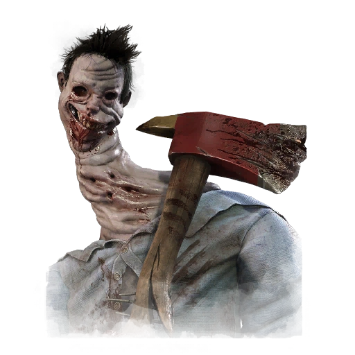

Muñeco demoniaco
Humano Asesino en serie
Entidad inhumana
Criatura desconocida
Chucky es un personaje ficticio y el antagonista principal de la serie de películas de terror "Child's Play", creada por Don Mancini.
Es una muñeca "Good Guy" poseída por el alma de Charles Lee Ray, un notorio asesino en serie conocido como el "Estrangulador de Lakeshore".
Un asesino espeluznante capaz de acechar a sus víctimas y acercarse sigilosamente usando su poder, Velo de la noche.
Los supervivientes afectados se encontrarán desprotegidos al no percatarse de su presencia,
por lo que deberán usar su percepción del entorno para poder sobrevivir.
Un ser que está más allá de toda comprensión, aunque muchos lo han intentado.
Al ser una manifestación de los pensamientos oscuros de la que otrora era una comunidad vibrante,
la Draga puede teletransportarse entre los lugares e invocar una oscuridad abrumadora.